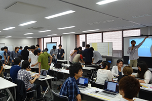
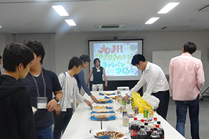
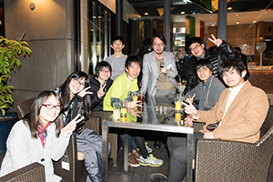

九州アプリチャレンジ・キャラバンについて
九州アプリチャレンジ・キャラバン（以下、チャレキャラ）は、一歩先ゆく実践的なプログラミングスキルや問題解決能力を身につけたいと感じている学生のためのアプリ開発イベントです。7月から順次開催されるイベントを通じてアプリの企画・開発を進め、最終ゴールである12月のコンテストを目指します。
期間中は現役エンジニアから構成されるメンターが、オンライン・オフラインでそれぞれの挑戦をバックアップ。学校のようなカリキュラムはありませんが、先に進みたいという情熱さえあれば、いくらでも学ぶことできる最高の環境を提供します。
エントリー時点で九州にある高等教育機関（大学・専門学校・高等専門学校など）のキャンパスに通う学生であれば、特に参加制限はありません。最優秀賞の賞金30万円を目指して突っ走るもよし、まずはオリジナルのアプリを作り上げることを目指すもよし、それぞれの想いをチャレキャラはサポートします。
目の前に現れる壁を1つずつクリアした先には、あなたの想像を越えた成長が待っています。
  スケジュール
説明会
6月より各協力教育機関で開催しています。
開発イベント
7月からおおよそ月1回順次開催します。開発イベントへの参加は任意です。9月に中間発表会を予定しています。いつの時点からでもまた何回でも参加することができます。
-
- 2017/7/22
-
コアイベント
コアイベント 1
-
- 2017/8/5
-
コアイベント
コアイベント 2
-
- 2017/8/19
-
追加イベント
開発ブートキャンプ
-
- 2017/9/9
-
コアイベント
コアイベント 3
-
- 2017/10/14
-
中間発表
中間発表
コンテストへのエントリー〆
-
- 2017/11/11
-
コアイベント
コアイベント 4
開催場所: 福岡県Ruby・コンテンツ産業振興センター（福岡市博多区博多駅東1丁目17-1）
※イベントの日程・内容は変更になる場合があります。予めご了承ください。コンテスト
応募締め切り：2017年9月9日 2017年10月14日 ※中間発表に合わせて変更になりました。
コンテストでは、プレゼンとデモンストレーションによる応募アプリの審査と優秀者表彰を行います。コンテストは一般公開します。
| 日時： | 2017/12/9（土） |
|---|---|
| 場所： | アクロス福岡 |
| 表彰内容： | 最優秀賞（副賞30万円） 優秀賞（副賞5万円） 企業賞 |
協賛
テーマスポンサー
| 主催： | 九州アプリチャレンジ・キャラバン2017 実行委員会 |
|---|---|
| 共催： | 福岡県Ruby・コンテンツビジネス振興会議 |
| 特別協力： | |
| 協力教育機関： |
|